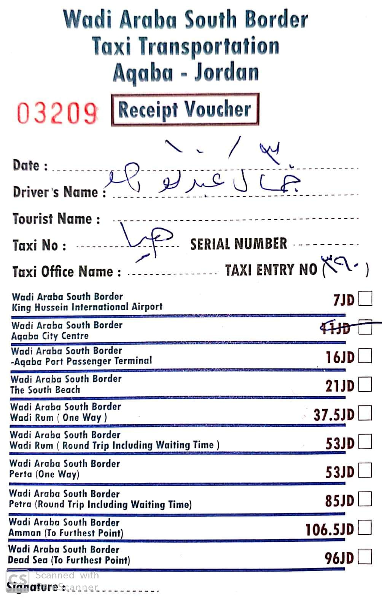
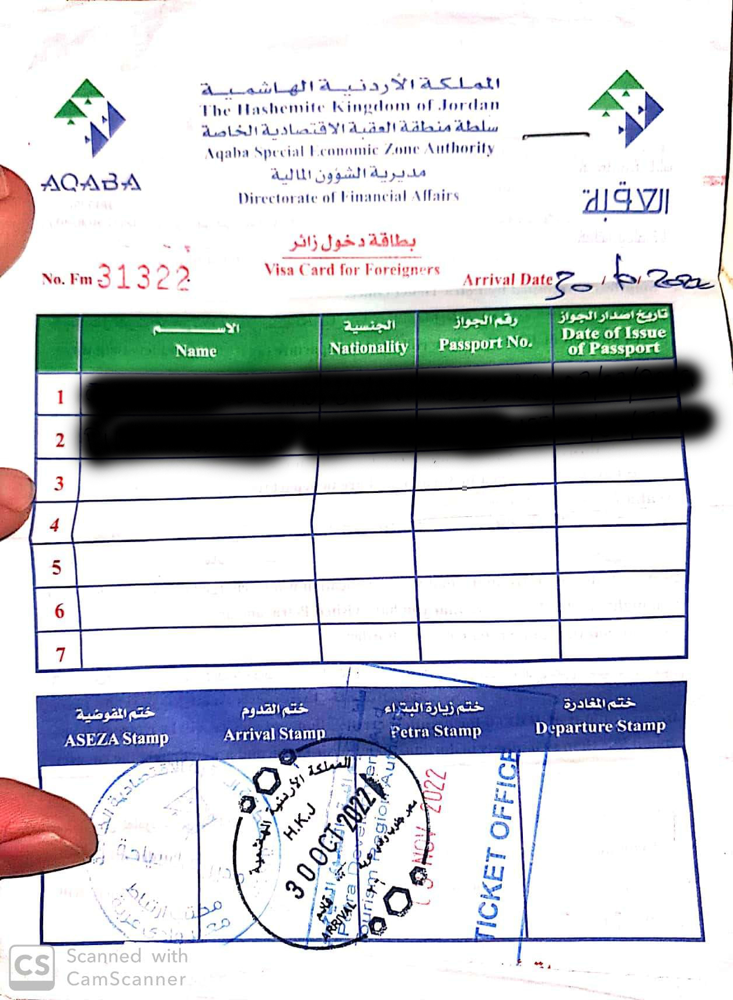

Visitar Jordania e Israel (barato) en 2022
La ruta a tomar es principalmente la siguiente:

- Avion España - Tel Aviv
- Viaje de Tel Aviv a Jerusalén
- De Jerusalén a Jordania, Frontera sur Eliat/Aqaba
- Buceo en Aqaba
- De Aqaba a Wadi Rum
- De Wadi Rum a Petra
- De Petra a Amman o Vuelta a Tel Aviv via Aqaba
El clima
Enchufes
En Israel los enchufes son de tipo C y H. La corriente funciona a 230 V y 50 Hz (como en España).
No Hace falta llevar adaptador ya que, aunque el más común de los enchufes es el H, es compatible con el C.
Fuente [https://www.dcpowercord.com/type-h-plug.html](https://www.dcpowercord.com/type-h-plug.html

En Jordania es otro tema, si bien la tensión es 230 V utilizan enchufes tipo C, D, F, G and J
Voy a suponer que se puede ir a pelo :)

Las tarifas de todas los monumentos de Jordania se pueden consultar Aquí
Propina
- Propina típica < 15%, sólamente en bares y restaurantes
- Se deja dinero en la mesa en metalico. Rara vez con tarjeta
- No para taxis
Entrar y salir del país
- No sellan el pasaporte, en cambio dan una hojita de papel que hay que conservar.
- Tienen una estricta seguridad, van a realizar muchas preguntas e incluso llevarte a una habitacion separada.
Otras cuestiones
- Agua del grifo potable
- País seguro inclusive por la noche
- Numeros de emergencia: 100 policia, 101 ambulancia, 102 bomberos
- Hay soldados en todas partes
Transporte
- No hay Uber, Lyft ni nada similar
- Los taxis NO aceptan tarjetas de credito.
- Ignora taxis ilegales
- Existe una app local de taxis, Gett, pero se cuelga así que lleva efectivo
- Los taxis deben llevar un taximetro, la única tarifa fija es desde el aeropuerto
- Hay sistema de scooters y bicis de alquiler (la ciudad es plana), además el bus público y funciona bien.
No me extenderé mucho. En mi opinión Wadi Rum es lo mejor de Jordania. Nosotros elegimos una experiencia de 3 días y 2 noches. Si se coge la experiencia de un día te dan una vuelta por la entrada, zona abarrotada de turistas donde pierde un poco el encanto. Ir por libre si te alquilas un 4x4 y tienes un GPS es una opción.
Tarifas
Obviamente es una zona abierta pero, como para todo en este país,
te cobran por entrar. wadirum.jo
5 JD por persona, niños menores de 12 años gratis.
Visitar Petra
La pagina oficial es https://visitpetra.jo
Petra es mucho más que la simple pared de piedra que se ve en las fotos. Es toda una enorme ciudad milenaria.
En mi opinión personal, si se llega a las 6 a.m. y se tiene una buena forma física, se puede ver todo en un día. En
caso contrario, tranquilamente se puede ver todo en dos días. Un hecho algo triste es que está muy mal conservado. Los
monumentos están tallados en piedra bastante arenosa y la gente deambula por todas partes. Hay capiteles romanos tirados
por el suelo y ganado en el interior de los monumentos, cuando no mierda (literalmente) y basura.
Tarifas y tickets
El centro de visitantes abre de las 6:00 a las 18:00 en verano y de las 6:00 a las 16:00 en invierno.
Los tickets solo se pueden comprar presencialmente en el centro de visitantes. Varían en función de cuantos días se
permanezca en Petra.
Se pueden consultar en Aquí
Para aquellos que permanezcan al menos una noche en Jordania:
Para los que no pernoctan en Jordania son 90 JD.
Si vas el primer día que visites Jordania te cobraran 90 JD (ya que no saben si te vas a ir ese mismo día o no) y al
día siguiente te los devuelven.
Para todos aquellos que no entren por la frontera de Eilat/Aqaba como se describe en el blog, es recomendable adquirir el Jordan Pass que incluye las tasas de entrada a Jordania, se tramita el visado online (no hay que hacer nada en la frontera) e incluye la entrada de Petra y otros lugares. Yo personamente no lo compré ya que vale unos 75 JD
Las tarifas de todas los monumentos de Jordania se pueden consultar Aquí
Como llegar y Dónde dormir
La ciudad más cercana a petra es Wadi Musa. Muchos hoteles ofrecen
lanzaderas gratuito hasta Petra. En cualquier caso, un taxi puede costar unos 5 JD (6€).
Para desplazarte hasta Petra desde Aqaba o Amman se puede coger un taxi o un autobús https://www.jett.com.jo/en/.
A día de hoy vale 15 JD. Alternativamente, se puede alquilar un coche o coger un taxi.
Precios y estafas dentro de Petra
Antaño, los beduinos solían poblar Petra. Al convertirse esta en patrimonio de la humanidad, los beduinos fueron reubicados en una ciudad cercana. Sin embargo, tienen docenas de puestos y negocios en Petra. A nivel personal me resultó muy hostigante e incluso desagradable. Tratan de sacarte la máxima cantidad de dinero posible. A continución, describo los puntos más conflictivos.
La vista del tesoro desde arriba.
Es la foto icónica de Petra. El tesoso es de los primeros monumentos que se ven al entrar en Petra. Al llegar a él, te abordaran varios beduinos ofreciéndote subir a la cima. Piden cantidades exorbitantes de dinero por ello y te impiden el paso si no les pagas. Después de discutir con ellos, llamarlos de todo y ya os imagináis el resto, subimos 2 personas por 7 JD. En general pueden pedir tranquilkamente 10 o 20 por persona. NO ES NECESARIO PAGARLES La realidad es que la mejor de las vistas se tiene al hacer el trekk de las tumbas reales. Tardas un par de horas en subir y bajar, y por el camino hay varios miradores que merecen la pena.
Los burros
El recorrido más arduo en Petra es el del Monasterio. Se encuentra al final de la ciudad. Al comienzo del camino probablemente te aborden ofreciendote subir en burro. Yo iba con una persona relativamente mayor y acabamos pagando 10 JD por dos personas (trayecto solo ida). En mi opinión fue un precio bajo y aprovechando que llegamos pronto, cuando al resto de turistas les faltaba todavía un rato largo para llegar y habia poca demanda. Otros turistas (americanos) pagaron 70 JD por persona... Es necesario negociar el precioo
Comer y beber 2022
En general no compré nada dentro de petra. Si sabes donde buscar, hay comida muy buena y barata en la ciudad.
En esta calle hay una tienda de dulces, donde una bandeja de dulces arabes cuesta 1 JD. También hay otra tienda de
falafel, 20 falafel por 1 JD o 1 "durum" de falafel y patatas por 1 JD.
8FFH+75F، الشارع السياحي،, Wadi Musa, Jordania
Orientativamente (en una tienda de gente honrada que no joda a los turistas) una botella de agua grande vale 0.5 JD
Un plato de arroz o un shawarma vale unos 2.5 JD, un plato de cordero unos 5 JD.
En las zonas turísticas encontrareis precios inflados y platos por 12 JD etc...
Vestimenta
Es una zona extensa llena de rocas y polvo. Se recomiendan deportivas cómodas o de montaña. Nótese que Jordania es un país musulmán, por ende, es recomendable cubrirse las piernas y los hombros.
https://aqaba.jo/Pages/Details/Attraction/2/Aqaba_Castle
Frontera Aqaba / Israel: Wadi Araba Border / Yitzhak Rabin 2022
Por ubicación me parece la frontera más llamativa. Está cerca de los principales monumentos y acarrea otras ventajas.
Una de las razones principales para utilizar esta frontera es que si se pasan un par de noches en el país no es
necesario pagar las tasas de entrada. De esta forma nos podemos ahorrar unos 50 JD (70€) por persona.
Un buen blog post al respecto (en ingles) https://travelpixelz.com/blog/eilat-aqaba-border-crossing La ciudad más cercana por el lado israelí es Eilat y la más cercana por el lado jordano es Aqaba.
Ventajas
- Es la frontera más cercana a los principales monumentos.
- No es necesario pagar las tasas de entrada:
- Más de 3 noches consecutivas en Jordania--> GRATIS
- Más de 2 noches consecutivas + visita a Petra --> GRATIS
- Menos de 2 noches + petra 40 JD (55€)
- Menos de 2 noches + no petra 60 JD (85€)
- ADEMÁS Si no se pasan más de 3 noches en Jordania hay que pagar 10 JD de tasa de salida (en cualquier frontera).
Lado de jordania (2022)
De la frontera a Aqaba
- La frontera está a unos 10 km (20 minutos) en coche de Aqaba. La forma más fácil de llegar es en taxi.
- Hay precios oficiales, pero los taxistas suelen pedir más. Ser educado e insistir en el precio oficial suele funcionar.

En general los precios son incluso más baratos que los oficiales. Un viaje Petra-Aqaba puede costar fácilmente 40 JD.
El viaje a Wadi Rum nos costó 25 JD.
En general hay que negociar absolutamente todo, hasta el precio de la comida.
Procedimientos a través del cruce fronterizo de South Wadi Araba
Realmente es muy sencillo, llegas al puesto fronterizo. Para salir de israel se paga una tasa de unos 104 NIS por
persona. Se puede pagar con tarjeta. En ese momento te dan una papel que representa el fin de la VISA.
Al llegar al lado jordano se rellena el siguiente formulario

Te hacen un pequeño registro biometrico y te sellan el pasaporte y ya esta.
Lado Israelí
De lunes a jueves 6:30 am - 20:00
Viernes y sábado 8:00 am - 20:00
De la frontera al centro de Eilat
La frontera se encuentra a unos 6 km (10 minutos) del centro de Eliat. Aproximadamente 40 NIS (unos 10-12€).
Procedimientos a través del cruce fronterizo de South Wadi Araba
- Control de pasaporte a la entrada
- Tasa de salida 105 NIS (30€)
- Te dan un papelito de salida para adjuntar al pasaporte (en Israel no sellan los pasaportes)